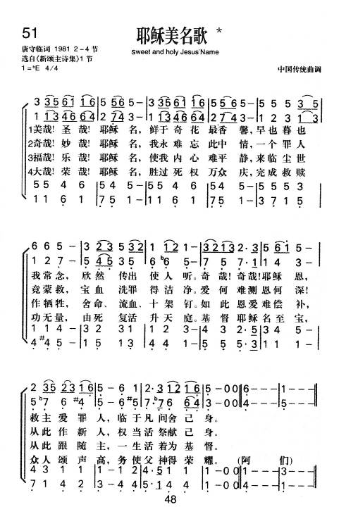
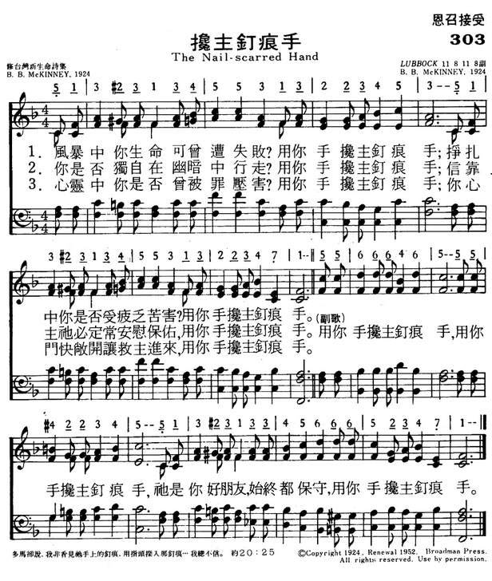

|
|
|
|
|
|
|
https://www.mred365.cn/szxg/7177.html

|
|
|
|
|
LX1836
Sweet And Holy Jesus'
Name
174耶稣美名
[華]
唐守临，1906-1993
上海
是倪柝声的同工之一，上海地方教会长老。著作：荒漠甘泉、唐守临讲道集。
唐守临名醒，字守临，1906年生，1927年毕业于东吴大学，曾在清心中学、复旦大学、东吴第二中学等任教。在这个阶段内，他的灵性得到复兴，1929年献身于基督，1936年起在基督徒聚会处传道，曾在浙江
、江苏、上海等地负责教会工作。1958年后，他所属的教会参加上海静安区基督教联合礼拜，自此他便在怀恩堂担任同工。1980年后他任中国基督教三自爱国运动委员会副主席、顾问。他于l993年3月25
日安息主怀。
http://www.gerenjianli.com/Mingren/07/1a266an2kkp660g.html
耶稣美名歌
*Fair Name Of Jesus* 唐守临詞;
調用《水仙花》
詩歌賞析: 第51首
耶稣美名歌*Fair Name Of Jesus*
唐守临詞;
調用《水仙花》
经文：“除他以外，别无拯救。因为在天下人间，没有赐下别的名，我们可以靠着得救”
(徒4：12)。
《耶稣美名歌》原是美国公理会(见第25首注①)派来中国的传教士富善
(C．Goodrich，1836—
1925)根据中国民歌《茉莉花》的曲调而写的一首圣诗，在1911年版《颂主圣诗》内选入。富善于
1865年来华，先后在离北京不远的通州传教；一生从事教育和翻译工作，曾任华北协和大学教授，兼任神学院院长，他对汉语颇有研究，除编有《富善字典》(袖珍汉英字典，附北京话音标)和《官话特性研究》等书外，又参加(《颂主诗歌》浸会北华差会出版)第二版的编辑工作；还把圣经译为蒙古文
（1919年出版)
《新编》采用原诗歌词的第一节，第二至四节乃唐守临长老所作。
唐守临名醒，字守临，1906年生，1927年毕业于东吴大学，曾在清心中学、复旦大学、东吴第二中学等任教。在这个阶段内，他的灵性得到复兴，1929年献身于基督，1936年起在基督徒聚会处传道，曾在浙江
、江苏、上海等地负责教会工作。1958年后，他所属的教会参加上海静安区基督教联合礼拜，自此他便在怀恩堂担任同工。1980年后他任中国基督教三自爱国运动委员会副主席、顾问。他于l993年3月25
日安息主怀。
唐守临自幼爱好唱赞美诗。他具有浑厚的男低音歌喉，而且记忆力惊人，直至古稀之年，仍能把许多赞美诗一字不误地背唱。他在30年代便曾试写赞美诗若干首。1932年以后，他在上海福音书房任编辑，参与修改、增订《诗歌》，并翻译、写作一些诗歌。1982年他担任中国基督教圣诗委员会委员，积极支持《新编》的编辑工作。提出过不少好的建议，并且带头创作、投稿。
《新编》内除这首是唐守临的作品外。还有166、247、251、298首(以上皆作词)，136首
(词曲)。
这首诗所采用的曲调是我国民间流行的民歌，富善称之为《水仙花》；一般称为《茉莉花》。有人说是苏南民歌，也有人认为是河北民歌。可能是一个基调相似的歌曲，各地稍有变化。总之是一首人们喜听喜唱的民间曲调。音乐结构均衡，末句运用附点节奏，给人以轻盈活泼的感觉。后来由英国人希特纳把它用五线谱记录下来。1792年英国巴罗伯爵
(Sir.J.Barrow,1764— 1848)趁他在华任
(Sir.J.Barrow,1764— 1848)趁他在华任
外交官的机会学习汉语并研究中国文学和科学,把这首曲收入所著的《中国游记》
(1804)。英国作曲家班托克
(Bantock，1868—
1946)将它编入《各国民歌一百首》一书内，使得此曲传布全球。意大利作曲家普契尼歌剧《杜兰朵》中也采用了这个曲调
。
主耶穌啊，每想到祢，心中便覺甜蜜；
深願我能早日見祢，與祢永在一起。
世上並無一個聲音，能把祢恩唱盡；
人間也無一顆慧心，能道祢愛何殷！
最能滿足我的心懷，尚非祢恩祢愛；
乃祢自己和祢神采，最能使我暢快。
祢愛多麼長闊深高，沒有人能知曉；
蒙愛的人只能說道：“哦，祢的愛奇妙！”
（副歌）
主！祢是園中的鳳仙花，祢是谷中的百合花，
祢是沙崙的玫瑰花，我心豈能捨下？
這首詩歌詞，曲調都很美，它比喻主是園中的鳳仙花，谷中的百合花和沙崙的玫瑰；想到主，便感甜美，惟主愛能滿足心懷。
這首詩是唐守臨（Tang Shou-lin, 1906-1993）長老所作。 他畢業於東吳大學後，曾在教會學校執教。
在他靈性大復興後，決志獻身做傳道。先在上海福音書房任編輯。 1936年起，他在浙江，江蘇，上海等地各教會事奉。 1958年後，他在上海懷恩堂擔任同工。
1982年，他擔任中國基督徒聖詩委員會委員。
唐守臨自幼愛唱讚美詩，他具有渾厚的男低音歌喉，及驚人的記憶。 在他年邁時，尚能把許多讚美詩一字不誤地背詠。
這首詩是他最初的習作，寫在1929年，曾被宋尚節，周志禹等牧師在奮興會中採用。
歌曲是毛宗杰（Mao Zong-jie,1913 - ）在1931年所譜。毛宗杰出生在上海，外祖父和父親是傳道人，自幼在教會環境長大，從小就在詩班唱詩。
日後他在國立音樂院任音樂教授。
當年毛宗杰就讀於東吳大學附屬第二中學，唐守臨是他的老師，因兩人都喜歡音樂，就常在一起編唱詩歌。唐守臨將這首歌詞交給毛宗杰譜曲時，毛宗杰很受感動，他說：「這是所羅門王的雅歌，也是我們基督徒的希望和歡樂，它表達了信徒對主的愛。」
唐守臨引用今日經文又作一詩歌，歌名「滿園芬芳」，歌詞如下：
北風啊，求速興起！南風啊，快吹來！
吹拂在我心園地，滿園芬芳播開。
他像林中蘋果樹，我喜坐它蔭下；
果實甘甜又成熟，心靈力量倍加。
願我在祂的心上，如同印記銘刻；
祂愛比死更堅強，眾水不能淹沒。
我心所愛者，來啊，我屬你，你屬我，
我們同往田間吧，享受各樣佳果。
（副歌）
主，我心所愛，到這�堥荂A
與我永同在，賞我純潔愛。
中英文聖詩集參考
英文歌名 Whenever
I Think of You
讚美詩(新編) 251
中文歌名 滿園芬芳
讚美詩(新編) 247
http://www.hymncompanions.org/Sep/15/stream.php
唐守临
维基百科，自由的百科全书
唐守临（1906年－1993年），又名唐醒，是倪柝声的同工之一，1950年至1958年上海地方教会长老之一。1956年以后带领一部分地方教会信徒参加三自爱国运动，并长期担任中国基督教三自爱国运动委员会副主席。

生平
1906年，唐守临出生在苏州的一个牧师家庭，1927年毕业于东吴大学，毕业后在东吴大学附属第二中学（位于上海虹口昆山路，景林堂附近）等校執教。1931年脱离监理会，转入地方教会（同他的学生江守道和周行义[1]）。
后来，唐守临经历了属灵的复兴，在1936年5月間奉献做全时间傳道人。[2]先在上海福音书房任編輯。1936年起，他在浙江、江蘇、上海等地各教會参与事奉。在1930年代，兴起了苏州地方教会，在大锏银巷10号恢复了中断近10年的南京地方教会的聚会[3]。抗战期间曾去长沙、重庆等地开展。1950年设立为上海地方教会的长老之一，兼任上海福音书房经理。参与编写《诗歌》（增订本及选本），并编著《圣经提要》。
1942年，他是参与革除倪柝声的上海地方教会的11位同工、长老之一。（另外10位是杜忠臣、俞成华、许达微、张光荣、朱臣、江守道、张愚之、李渊如、张耆年、缪韵春）。此后去莫干山。1948年他们与倪柝声恢复了交通。
1939年，唐守临曾编译考门夫人的灵修著作《荒漠甘泉》，由上海福音书房出版，至今广为流传。
唐守臨很有诗歌的恩赐。他写的一些诗歌被选入地方教会使用的《诗歌》中，传唱至今，其中一首在孹饼聚会中经常被信徒选唱:“咒诅他受，祝福我享，苦杯他饮，爱筵我尝，如此恩爱举世无双，我的心哪，永志不忘。”许多基督徒表示，他们从唐守临所写的诗歌得到帮助。
1952年倪柝声失踪被捕后，唐守临、任钟祥、张愚之三位长老代表上海教会和灵粮堂的周福庆、华美熙、徐天民、陆传芳；乌鲁木齐北路聚会所的杨绍唐等负责人，一同祷告交通，达成共识：在爱国的政治运动上与「三自」团结；但在发生干涉信仰与传道自由和打击信仰事件时就与「三自」斗争。这就是＂又团结，又斗争″的双轨路线。
1956年1月29日，上海教会一批主要负责人俞成华、张愚之、蓝志一、汪佩真、李渊如等均被逮捕或隔离审查，打成反革命分子。在压力之下，唐守临、任钟祥、左弗如代表上海教会再次革除倪柝声，并重新参加三自组织，欲以此保住公开的聚会和南阳路145号聚会所。但到了1958年“献堂献庙”、联合礼拜的运动中，被迫交出南阳路聚会所，到怀恩堂小房间维持聚会，此后再也没能收回会所。此後，唐守临在上海懷恩堂擔任静安区联合礼拜传道，并且任中國基督教三自愛國運動委員會史料組編譯員。
1980年担任中国基督教三自爱国运动委员会副主席，1982年，唐守临擔任中國基督教聖詩委員會委員。1988年後，歷任中國基督教協會第二、三屆顧問。
1980年代初，唐守臨、周行义和一位弟兄[谁？]恢复上海地方教会的聚会。1985年1月，经批准得以在怀恩堂小房间内恢复擘饼聚会。
1983年4月，唐守臨和任钟祥二人配合中华人民共和国政府取缔李常受召会在中国大陆的分支“呼喊派”的有关行动，為金陵協和神學院編寫函授教材《坚决抵李常受的异端邪说》。据认为這份教材的內容是根據美國被高等法院判定為誹謗的兩本書《神人》和《彎曲心思者》。
著作
https://www.wikiwand.com/zh/%E5%94%90%E5%AE%88%E4%B8%B4
茉莉花
（附曲谱）
曲调是四声部《茉莉花》，歌词是赞美诗《耶稣美名歌》。
今天的曲子选自《新编赞美诗》第51首，名字是《耶稣美名歌》，是美国公理会派来中国的传教士富善根据中国民歌《茉莉花》的曲调写的一首圣诗。
富善于1865年来华，先后在离北京不远的通州传教，他一生从事教育和翻译工作，曾任华北协和大学教授，兼任神学院院长。他对汉语颇有研究，编有《富善字典》和《官话特性研究》等书，还把《圣经》译为蒙古文。
《茉莉花》是我国流传甚广的民歌，富善称之为《水仙花》。有人说它是苏南民歌，也有人认为是河北民歌，可能是一个基调相似的歌曲，各地稍有变化，总之是一首人们喜听喜唱的民间曲调。
这首歌由英国人希特纳用五线谱记录下来，1792年英国巴罗伯爵 趁在华任
外交官的机会，学习汉语、研究中国文学和科学，并把这首曲收入所著的《中国游记》。英国作曲家班托克将它编入《各国民歌一百首》一书内，使得此曲传遍全球。意大利作曲家普契尼的歌剧《杜兰朵》中也采用了这首旋律。
《茉莉花》音乐结构均衡，巧妙运用附点节奏，给人以轻盈活泼的感觉，而且是一首只用“宫商角徵羽”的中国民歌，具有鲜明的中国传统特色。
https://new.qq.com/omn/20210103/20210103A09OUF00.html
威廉·华兹华斯 （William Wordsworth，1770-1850）

|
|
 华兹华斯华兹华斯生于律师之家[5]，曾就读于剑桥大学圣约翰学院，毕业后到欧洲旅行，在法国亲身领略了大革命的风暴。1783年其父去世，他和弟兄们由舅父照管，妹妹多萝西（Dorothy）则由外祖父母抚养。多萝西与他最为亲近。
华兹华斯华兹华斯生于律师之家[5]，曾就读于剑桥大学圣约翰学院，毕业后到欧洲旅行，在法国亲身领略了大革命的风暴。1783年其父去世，他和弟兄们由舅父照管，妹妹多萝西（Dorothy）则由外祖父母抚养。多萝西与他最为亲近。
1787年他进剑桥大学圣约翰学院学习，大学毕业后去法国，住在布卢瓦。他对法国革命怀有热情，认为这场革命表现了人性的完美，将拯救帝制之下处于水深火热中的人民。在布卢瓦他结识了许多温和派的吉伦特党人。1792年华兹华斯回到伦敦，仍对革命充满热情。但他的舅父对他的政治活动表示不满，不愿再予接济。正在走投无路时，一位一直同情并钦佩他的老同学去世，留给他900英镑。于是在1795年10月，他与多萝西一起迁居乡间，实现接近自然并探讨人生意义的宿愿。多萝西聪慧体贴，给他创造了创作的条件。后来她也成为了诗人。一直与他作伴，终身未嫁。
创作生涯
1798年9月至1799年春，华兹华斯同多萝西去德国小住，创作了《采干果》、《露斯》和短诗《露西》组诗，同时开始写作长诗《序曲》。1802年10月，华兹华斯和相识多年的玛丽·郝金生结婚。
这段时间，华兹华斯写了许多以自然与人生关系为主题的诗歌，中心思想是大自然是人生欢乐和智慧的源。1803年华兹华斯游苏格兰，写了《孤独的收割人》。1807年他出版了两卷本诗集，这部诗集的出版，总结了从1797至1807年他创作生命最旺盛的10年。
 华兹华斯华兹华斯与柯尔律治（Samuel
Taylor Coleridge）、骚塞（Robert
Southey）同被称为“湖畔派”诗人（Lake Poets）。[6]他们也是英国文学中最早出现的浪漫主义作家。他们喜爱大自然，描写宗法制农村生活，厌恶资本主义的城市文明和冷酷的金钱关系，他们远离城市，隐居在昆布兰湖区和格拉斯米尔湖区，由此得名“湖畔派”。
华兹华斯华兹华斯与柯尔律治（Samuel
Taylor Coleridge）、骚塞（Robert
Southey）同被称为“湖畔派”诗人（Lake Poets）。[6]他们也是英国文学中最早出现的浪漫主义作家。他们喜爱大自然，描写宗法制农村生活，厌恶资本主义的城市文明和冷酷的金钱关系，他们远离城市，隐居在昆布兰湖区和格拉斯米尔湖区，由此得名“湖畔派”。
“湖畔派”三诗人中成就最高者为华兹华斯。他于1798年和柯勒律治合作发表了《抒情歌谣集》，[7]华兹华斯和柯勒律治从拥护法国革命变成反对，于是前者寄情山水，在大自然里寻找慰藉，后者神游异域和古代，以梦境为归宿。两人的诗歌合集题名为《抒情歌谣集》，于1798年出版，《抒情歌谣集》宣告了浪漫主义新诗的诞生。两年后再版时，华兹华斯加了一个长序。在这篇序中，华兹华斯详细阐述了他的浪漫主义文学主张，主张以平民的语言抒写平民的事物、思想与感情，被誉为浪漫主义诗歌的宣言。
在《决心与自立》（Resolution and
Independence，1802年）一诗中，华兹华斯描写了一位年老体衰却要不停奔波劳作的捞水蛭人。
此后，华兹华斯的诗歌在深度与广度方面得到进一步的发展，在描写自然风光、平民事物之中寓有深意，寄托着自我反思和人生探索的哲理思维。完成于1805年发表于1850年的长诗《序曲》则是他最具有代表性的作品。
墓碑华兹华斯创作最旺盛的时期是1797至1807年的10年。其后佳作不多，到1843年被任命为“桂冠诗人”时已经没有什么作品了。然而纵观他的一生，其诗歌成就是突出的，不愧为继莎士比亚、弥尔顿之后的一代大家。

对于中国读者，华兹华斯却不是一个十分熟悉的名字。能读英文的人当然都看过他的若干小诗，如《孤独的割麦女》（The Solitary Reaper），但不懂英文的人却对他的诗没有多少印象。原因之一是他的诗不好译——哲理诗比叙事诗难译，而华兹华斯写得朴素、清新，也就更不好译了。原因之二是，他曾被国内评为“反动的浪漫主义”的代表，因此不少人未读他的作品，就已对他有了反感。还有一个原因可能是：他那类写大自然的诗在中国并不罕见，他的思想也类似老庄，因此人们对他无新奇感。但华兹华斯是值得一读的。除了历史上的重要性之外，他有许多优点，例如写得明白如话，但是内容并不平淡，而是常有神来之笔，看似普通的道理，却是同高度的激情结合的。法国大革命就曾深深激动了他，使他后来写下这样的名句：
幸福呵，活在那个黎明之中，
年轻人更是如进天堂！
——《序曲》第十一章
威廉·华兹华斯华兹华斯的山水诗极其灵秀，名句如：我好似一朵孤独的流云。他的爱情诗，如与一位名叫露西的姑娘有关的几首，也是极其真挚动人，无一行俗笔，用清新的文字写出了高远的意境。他能将复杂深奥的思想准确清楚地表达出来，民歌体的小诗写得精妙，白体无韵诗的运用更在他的手里达到了新的高峰，出现了婉转说理的长长诗段。用这样的诗段他写出了长诗《丁登寺旁》，表达了大自然给他的安慰和灵感；接着他经营多年，写出了一整本诗体自传，题名《序曲——一个诗人心灵的成长》，开创了自传诗的新形式。在十四行诗方面，他将弥尔顿（Milton）的豪放诗风发扬光大，用雄健的笔调写出了高昂的激情，例如这样的呼唤：
啊，回来吧，快把我们扶挽，
给我们良风，美德，力量，自由！
你的灵魂是独立的明星，
你的声音如大海的波涛，
你纯洁如天空，奔放，崇高……
这是过去以写爱情为主的十四行诗中罕见之笔。总之，华兹华斯诗路广，意境高，精辟，深刻，令人沉思，令人向上，而又一切出之于清新的文字，确是英文诗里三或四个最伟大的诗人之一。只是后期他诗才逐渐枯竭，所作变得冗长沉闷，令人无限惋惜。
创作主张
华兹华斯是“湖畔诗人”的领袖，在思想上有过大起大落——初期对法国大革命的热烈向往变成了后来遁迹于山水的自然崇拜，在诗艺上则实现了划时代的革新，以至有人称他为第一个现代诗人。
他是诗歌方面的大理论家，虽然主要论著只是《抒情歌谣集》第二版（1800年）的序言，但那篇小文却含有能够摧毁十八世纪古典主义的炸药。
他说，诗必须含有强烈的情感，这就排除了一切应景、游戏之作；诗必须用平常而生动的真实语言写成，这就排除了“诗歌词藻”与陈言套语；诗的作用在于使读者获得敏锐的判别好坏高下的能力，这样就能把他们从“狂热的小说、病态而愚蠢的德国式悲剧和无聊的夸张的韵文故事的洪流”里解脱出来；
华兹华斯认为“所有的好诗都是强烈情感的自然流露”（ the spontaneous overflow of powerful emotion），主张诗人“选用人们真正用的语言”来写“普通生活里的事件和情境”，而反对以18世纪格雷为代表的“诗歌词藻”。他进而论述诗和诗人的崇高地位，认为诗非等闲之物，“诗是一切知识的开始和终结，它同人心一样不朽”，而诗人则是“人性的最坚强的保护者，支持者和维护者。他所到之处都播下人的情谊和爱”。
 华兹华斯华兹华斯的诗歌理论动摇了英国古典主义诗学的统治，有力地推动了英国诗歌的革新和浪漫主义运动的发展，因而英美评论家将华兹华斯的《抒情歌谣集序》称为英国浪漫主义的宣言。
华兹华斯华兹华斯的诗歌理论动摇了英国古典主义诗学的统治，有力地推动了英国诗歌的革新和浪漫主义运动的发展，因而英美评论家将华兹华斯的《抒情歌谣集序》称为英国浪漫主义的宣言。
《我好似一朵流云独自漫游》
 我好似一朵流云独自漫游这是华兹华斯抒情的代表作之一，写于1804年。据说此诗是根据诗人兄妹俩一起外出游玩时深深地被大自然的妩媚所吸引这一经历写成的，体现了诗人关于诗歌应描写"平静中回忆起来的情感（emotion
recollected in
tranquility）这一诗学主张。全诗可以分成两大部分，写景和抒情。诗的开篇以第一人称叙述，格调显得低沉忧郁。诗人一方面竭力捕捉回忆的渺茫信息，另一方面又觉得独自漂游，可以自由自在地欣赏大自然所赋予的美景。他把自己比作一朵流云，随意飘荡，富有想象的诗句暗示诗人有一种排遣孤独、向往自由的心情。在他的回忆中，水仙花缤纷茂密，如繁星点点在微风中轻盈飘舞
。
我好似一朵流云独自漫游这是华兹华斯抒情的代表作之一，写于1804年。据说此诗是根据诗人兄妹俩一起外出游玩时深深地被大自然的妩媚所吸引这一经历写成的，体现了诗人关于诗歌应描写"平静中回忆起来的情感（emotion
recollected in
tranquility）这一诗学主张。全诗可以分成两大部分，写景和抒情。诗的开篇以第一人称叙述，格调显得低沉忧郁。诗人一方面竭力捕捉回忆的渺茫信息，另一方面又觉得独自漂游，可以自由自在地欣赏大自然所赋予的美景。他把自己比作一朵流云，随意飘荡，富有想象的诗句暗示诗人有一种排遣孤独、向往自由的心情。在他的回忆中，水仙花缤纷茂密，如繁星点点在微风中轻盈飘舞
。
《序曲》
写作时间始于1799年初，并于1805年完成。在诗中，华兹华斯叙述了自己心灵发展的各个阶段的印象、感受和思想。全诗7881行，共十四卷，可分为两大部分。前八卷讲述诗人的早年生活：幼年和学业时期；在剑桥大学的岁月；假期生活；书的影响；阿尔卑斯山之旅；初见伦敦及伦敦小住，由爱自然发展到爱人类。后六卷则写他成熟时期，第一次法国之游，第二次法国留居，回返英国乡村。诗作记述了1798年前“一位诗人的心灵的成长”，可以清楚地看出他的政治、人生、艺术思想发展轨迹。在最后一卷中，华氏表达了自己的最高理想：在最小的标题上建立最大的事业。生活在日常世界不迷惑于感官印象，而是同精神世界作契合的交流。这是他一生的最后认识，他爬山、观海、看日出，最终悟出了一种来源于大自然的辉煌的智慧。
https://baike.sogou.com/v373414.htm
茉莉花 (民歌)[編輯]
|
|
此條目體裁可能更適合散文而非列表。 (2018年1月13日) |
《茉莉花》，是著名中國民歌，該曲歷史久遠，最早源於清朝乾隆年間，初名為《鮮花調》，一直為民間小調。《茉莉花》在中國多個地區有多個版本流傳，各個版本的曲調、歌詞往往大同小異。現在流傳最廣的是南京六合、揚州、天長到泰州一帶的民歌。《茉莉花》在中國民歌中有很高的地位，更在海內外華人和西方音樂界中廣為流傳。
![\relative c' {
\key c \major
\clef treble
\time 2/2
e4 e8 g a( c) c a |
g4 g8( a) g4 r |
e4 e8 g a( c) c a |
g4 g8( a) g4 r |
g g g e8( g) |
a4 a g2 |
e4 d8( e) g4 e8( d) |
c4 c8( d) c2 |
e8( d) c( e) d4. e8 |
g4 a8( c) g2 |
d4 e8( g) d( e) c( a) |
g2 a4 c |
d4. e8 c( d) c( a) |
g2 r \bar ".|"
}
\addlyrics {
好 一 朵 美 麗 的 茉 莉 花
好 一 朵 美 麗 的 茉 莉 花
芬 芳 美 麗 滿 枝 椏
又 香 又 白 人 人 誇
讓 我 來 將 你 摘 下
送 給 別 人 家
茉 莉 花 呀 茉 莉 花
}
\addlyrics {
好 一 朵 美 麗 的 茉 莉 花
好 一 朵 美 麗 的 茉 莉 花
芬 芳 美 麗 滿 枝 椏
又 香 又 白 人 人 夸
讓 我 來 將 你 摘 下
送 給 別 人 家
茉 莉 花 呀 茉 莉 花
}
\addlyrics {
hǎo yī duǒ měi lì de mò -- li -- huā
hǎo yī duǒ měi lì de mò -- li -- huā
fēn fāng měi lì mǎn zhī yā
yòu xiāng yòu bái rén rén kuā
ràng wǒ lái jiāng nǐ zhāi xià
sòng gěi bié rén jiā
mò -- li -- huā ya mò -- li -- huā
}](../image_hymn/a6k9mvbc.png)

{kind=link}
歷史[編輯]
- 乾隆年間刊印的《綴白裘·花鼓》中記載，《鮮花調》(《茉莉花》)又名《打花鼓》，是劇中人物在戲劇中唱的一首插曲。[1]
- 1792年，英國國王喬治三世派遣自己的表兄馬嘎爾尼勳爵率使團以賀乾隆帝80大壽為名出使中國。約翰·巴羅是使團的財務總管，後來擔任了馬嘎爾尼的私人秘書。約翰·巴羅和使團的一位德籍翻譯惠特納都深深喜歡上了中國民歌《鮮花調》(《茉莉花》)，並把它帶回了歐洲。[2]
- 傳教士富善根據這首歌的曲調寫成基督教讚美詩《耶穌美名歌》，1911年就已選入《頌主聖名》。
- 1920年至1924年間義大利作曲家普契尼將這首歌的曲調寫入他生前最後一部歌劇《杜蘭朵公主》中[3]，並因此在西方廣為流傳。
- 1942年，藝術家何仿從天長、六合交界的金牛山地區搜集整理了民歌《鮮花調》(《茉莉花》)[4][5]。
- 1954年，鄉村歌手婁麗紅最早把著名民歌茉莉花搬上江淮大戲院的舞台。[6]
- 1957年，南京前線歌舞團將其重新整理，更名為《茉莉花》。
- 1959年由中國青年藝術團帶到維也納的第七屆世界青年與學生聯歡節上。
- 1997年7月1日，香港主權移交給中華人民共和國，馬友友在慶回歸音樂會上演奏《茉莉花》。
- 1999年12月19日午夜，澳門治權移交儀式上，中國政府代表團入場時的伴樂正是由軍樂團演奏的《茉莉花》[7]。
- 2006年中國國家主席胡錦濤在對肯亞進行國事訪問時，曾與當地群眾一起以中文合唱民歌《茉莉花》。該新聞曾在中國中央電視台播出。
- 2008年夏季奧林匹克運動會的頒獎音樂為作曲家譚盾、王和聲重新編曲的《茉莉花》。[8][9]
- 中國2010年上海世界博覽會上，日本館的機器人用小提琴演奏了《茉莉花》。[10]
- 福州電視台《福州新聞》欄目片頭曲為《茉莉花》。[11]
- 江蘇省廣播電視總台新聞節目《江蘇新時空》在2016年6月1日以前使用《茉莉花》的改編版本作為片頭曲，但在2016年6月1日更換包裝及片頭後全面停用。
海外版本[編輯]
{kind=link}
除了中國版的《茉莉花》之外，海外還有日本版和琉球版兩種不同於中國風格的《茉莉花》。
中國民歌《茉莉花》在江戶時代由中國商人帶到日本長崎，成為當地清樂的著名樂曲。日本版的《茉莉花》與中國福建的版本最相近。大田南畝在其1803年編纂的「杏園間筆」中收錄有小曲「文鮮花」，就是日本版的《茉莉花》。而編纂於1831年的清樂樂譜《花月琴譜》中也收錄有《茉莉花》，只不過其題目記載為「含艷曲」。日本版的《茉莉花》名稱非常多，但多將名字誤記為「抹梨花」。
此外，琉球群島沖繩縣中城村伊集的傳統藝能「打花鼓」係自福建傳入，其歌詞發音與《茉莉花》很相近，但旋律與其他版本的《茉莉花》完全不同。
歌詞[編輯]
傳統的江蘇民歌歌詞為[12]：
- 好一朵茉莉花，
- 好一朵茉莉花，
- 滿園花開香也香不過她，
- 我有心採一朵戴，
- 又怕看花的人兒罵。
- 好一朵茉莉花，
- 好一朵茉莉花，
- 茉莉花開雪也白不過她，
- 我有心採一朵戴，
- 又怕旁人笑話。
- 好一朵茉莉花，
- 好一朵茉莉花，
- 滿園花開比也比不過她，
- 我有心採一朵戴，
- 又怕來年不發芽。
近些年流傳甚廣的歌詞為：
- 好一朵美麗的茉莉花
- 好一朵美麗的茉莉花
- 芬芳美麗滿枝椏
- 又香又白人人誇
- 讓我來將你摘下
- 送給別人家
- 茉莉花呀茉莉花
明清的版本 ：
- 好一朵茉莉花，
- 好一朵茉莉花，
- 滿園花草也香不過它，
- 奴有心采一朵戴，
- 又怕來年不發芽；
- 好一朵金銀花，
- 好一朵金銀花，
- 金銀花開好比鉤兒芽，
- 奴有心采一朵戴，
- 看花的人兒要將奴罵；
- 好一朵玫瑰花，
- 好一朵玫瑰花，
- 玫瑰花開碗呀碗口大，
- 奴有心采一朵戴，
- 又怕刺兒把手扎
https://zh.wikipedia.org/wiki/%E8%8C%89%E8%8E%89%E8%8A%B1_(%E6%B0%91%E6%AD%8C)